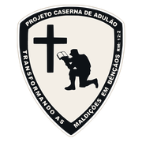
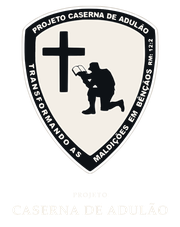

Projeto Caserna de Adulão
Um lugar para chegar. Um caminho para recomeçar.
Inspirado em Adulão, este Projeto nasce da convicção de que homens feridos não precisam de um palco. Precisam de acolhimento, verdade, comunhão e direção.
Continue a travessiaAntes da força, o acolhimento
Nem todo homem que precisa de ajuda sabe pedir ajuda.
Alguns continuam trabalhando, protegendo, liderando e servindo enquanto enfrentam suas guerras em silêncio.
O Projeto Caserna de Adulão parte de uma visão simples: ninguém deveria precisar parecer invulnerável para encontrar um lugar de chegada.
A restauração começa quando a verdade encontra um ambiente de graça.
O nome e a metáfora
Adulão foi refúgio antes de ser ponto de partida.
Em 1 Samuel 22, homens aflitos, endividados e amargurados se reuniram a Davi na caverna de Adulão. Não chegaram prontos. Chegaram carregando histórias, feridas e necessidades reais.
Para este Projeto, Adulão representa um lugar de passagem: acolher o homem como ele chega, caminhar com responsabilidade em sua reconstrução e prepará-lo para retornar ao serviço com propósito.
-
Refúgio
Um lugar seguro para chegar sem a obrigação de fingir que está tudo bem.
-
Transformação
Um processo de verdade, amadurecimento, reconstrução de vínculos e responsabilidade.
-
Preparação
Um caminho para que o homem retorne à família, à comunidade, à igreja e à sua missão com fundamentos mais firmes.
Adulão não é destino permanente. É lugar de chegada, transformação e envio.
Uma visão em construção
Acolher homens reais. Cultivar recomeços responsáveis.
O Projeto Caserna de Adulão é uma iniciativa cristã em construção, dedicada a formar um ambiente de acolhimento, verdade, comunhão e direção para homens em processo de recomeço.
Sua identidade nasce da centralidade de Cristo, do cuidado com a dignidade humana e da convicção de que restauração não é fuga da responsabilidade, mas um caminho de retorno consciente a ela.
Não procuramos homens invulneráveis. Procuramos construir um lugar onde homens reais possam recomeçar.
O caminho de Adulão
Acolher. Restaurar. Preparar.
-
Acolher
Receber o homem em sua realidade, sem exposição, espetáculo ou exigência de aparência espiritual.
-
Restaurar
Criar espaço para verdade, amadurecimento, reconstrução de vínculos e fortalecimento de fundamentos.
-
Preparar
Conduzir o homem a um retorno responsável ao serviço, à família, à comunidade e à missão que lhe foi confiada.
Chegar não é o fim do caminho. É o começo de uma travessia.
Fundamentos da caminhada
O que deve sustentar cada passo.
-
Cristo no centro
A transformação não se apoia em desempenho, heroísmo ou força pessoal.
-
Verdade com graça
Acolher não significa omitir. Corrigir não significa humilhar.
-
Dignidade
A dor humana não deve ser convertida em espetáculo, propaganda ou prova de impacto.
-
Responsabilidade
Restauração não apaga consequências, compromissos ou deveres.
-
Comunhão
Homens não foram feitos para enfrentar sozinhos todas as suas batalhas.
-
Serviço
O recomeço não termina no indivíduo. Deve alcançar seus vínculos e sua forma de servir.
Um lugar de aproximação
Há diferentes formas de chegar perto desta visão.
-
Para quem precisa de um lugar de chegada
Homens que atravessam períodos de crise, ruptura, silêncio ou reconstrução.
-
Para quem deseja caminhar ao lado
Pessoas dispostas a servir com maturidade, responsabilidade, discrição e compromisso.
-
Para quem deseja compreender a visão
Lideranças e comunidades interessadas em conhecer os fundamentos do Projeto.
Transparência desde o início
Uma visão em construção deve ser apresentada com honestidade.
Esta página registra a direção institucional inicial do Projeto Caserna de Adulão. Informações sobre governança, responsáveis, canais oficiais, documentos, formas de participação e atuação pública serão apresentadas somente após a devida validação.
- Sem métricas inventadas.
- Sem vínculos presumidos.
- Sem promessas maiores do que a estrutura atual.
- Com espaço para crescer de forma responsável.
Fundação institucional em desenvolvimento

Todo recomeço precisa de um lugar de chegada.
Adulão nos lembra que Deus também trabalha em cavernas, intervalos e processos. O que chega ferido não precisa permanecer sem direção.
Acolher para restaurar. Restaurar para preparar. Preparar para servir.